Personal Projects
Here, you will find some of my personal projects.
Programming has always been a hobby for me, and since pretty much always I have enjoyed working on sides projects. I am not sure why I like so much to spend time on these projects, I know of course that most likely nobody will ever use them, but I guess that I just like to build things with computers. I also really like Rust and C++. And I like to learn about topics that I don't know. Oh, and I like chess engines too.
So here's a little list with links to my repos !
A fully functional Chess Engine written completely from scratch in Rust
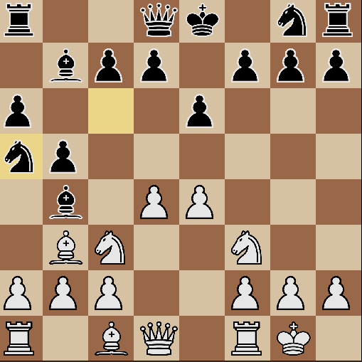
Multiplayer minecraft clone written from scratch, using OpenGL
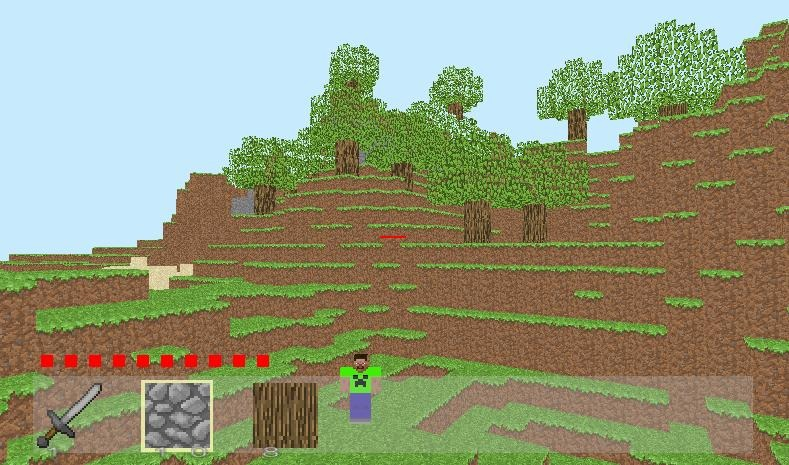
I wanted to see how difficult it would be to write an CPU equivalent of OpenGL. So here it is ! A 3D world renderer written from scratch in Rust, without any vision library such as OpenGL or Vulkan. To be able to render thousands of polygons efficiently on the CPU, I implemented binary space partitioning.
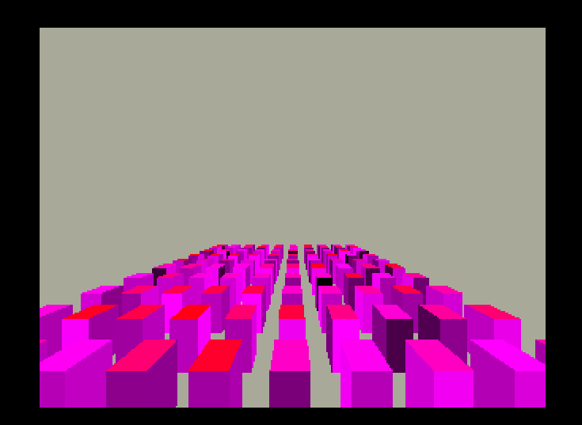
I was looking for a challenging project that would at the same time ask for some software design challenges, and for optimal coding in Rust. Writing a vim-like text editor turned out to be the perfect projet.
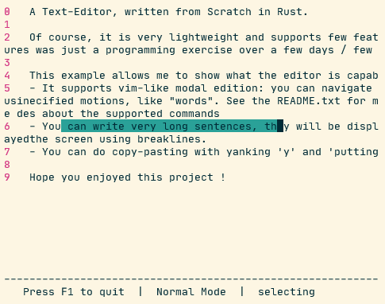
This project contains the parser (from scratch) and the interpreter of a very small programming language that I designed myself. I did this project in order to learn more about language theory.
If you forgot your cube but have access to a GPU, then use this toy to train
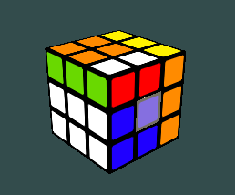
China Hardware Innovation Center, 1 year and a half long project in a team of 5 students from 3 different schools, to design and create a connected object.
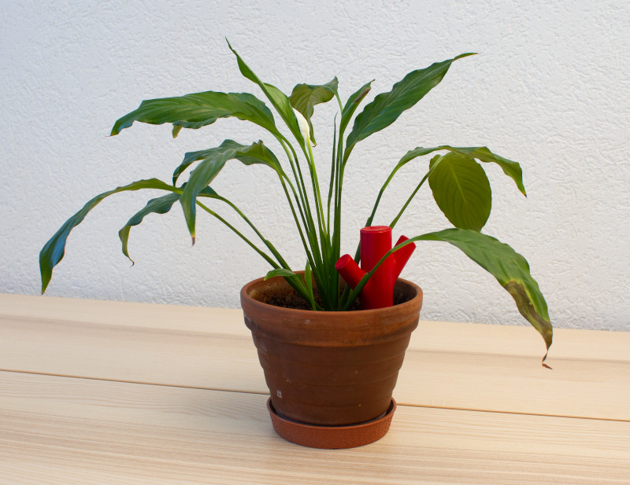
A fully functional Chess Engine written completely from scratch in C++
Robottle is an autonomous robot able to collect plastic bottles in a random environment. It was entirely done in a team of 3 students where I was the main developer. This project was showcased by NVIDEA as proof of concept for what a Jetson Nano Board can do !
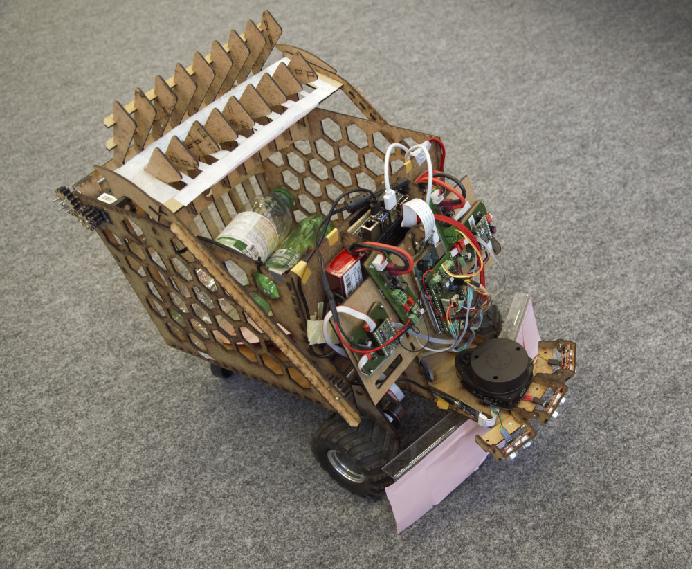
As you may have understood it, I like hiking. This is an Android App to track your recordings using GPS data and connected devices, then save them using Google's Cloud services.
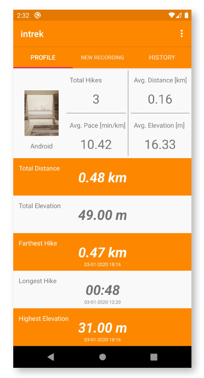
During a 3 days hackhathon, we developed a mobile app to help local stores gain visibility.
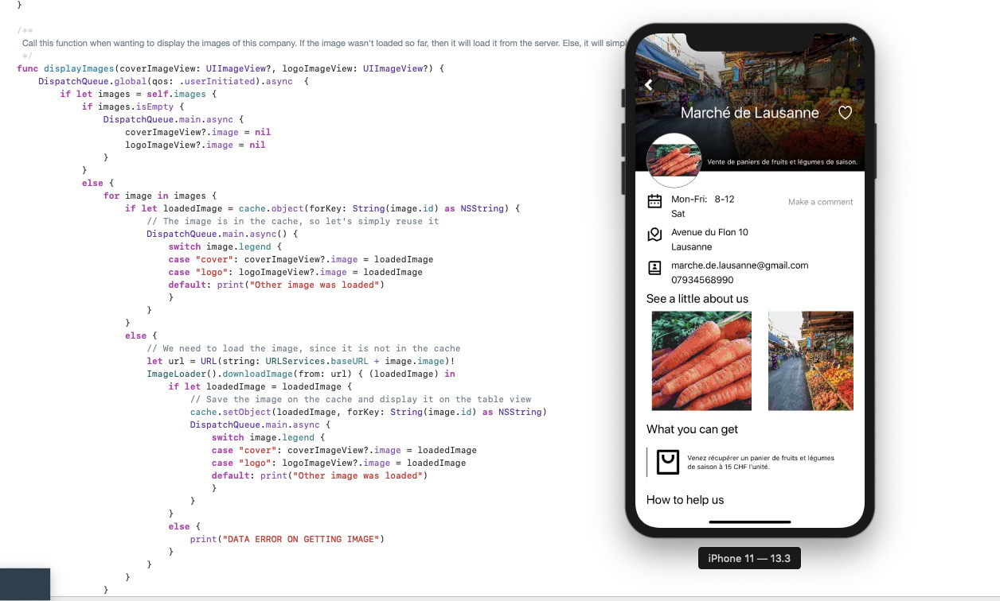
This project is a mobile game that I did with my brother when we were younger. Though it may not be the most professional recommendation, I had learned a lot while working on this enormous remake of the very famous Mine Sweeper.
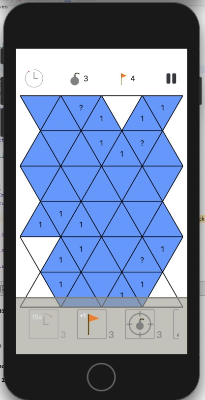
In this project, I had to analyse a video of a robot moving on top of numbers and operators to deduce an equation. I succedeed the project and its additional challenge and scored the best possible grade.
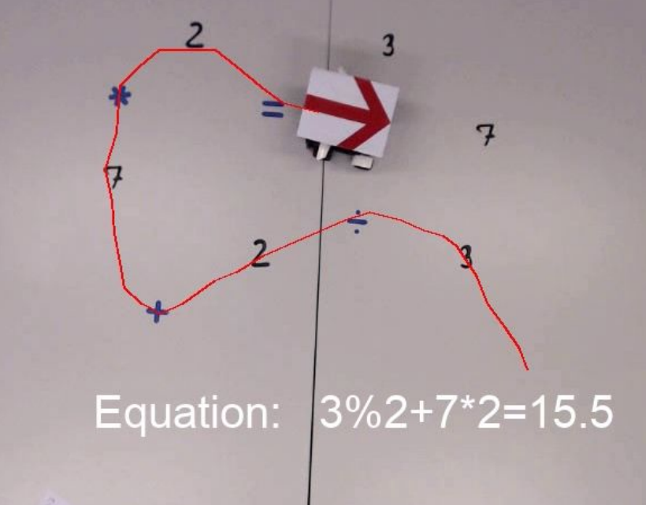
I love animals but it's difficult to take good pictures of them. So with my friend, we worked one weekend to design an animal trap
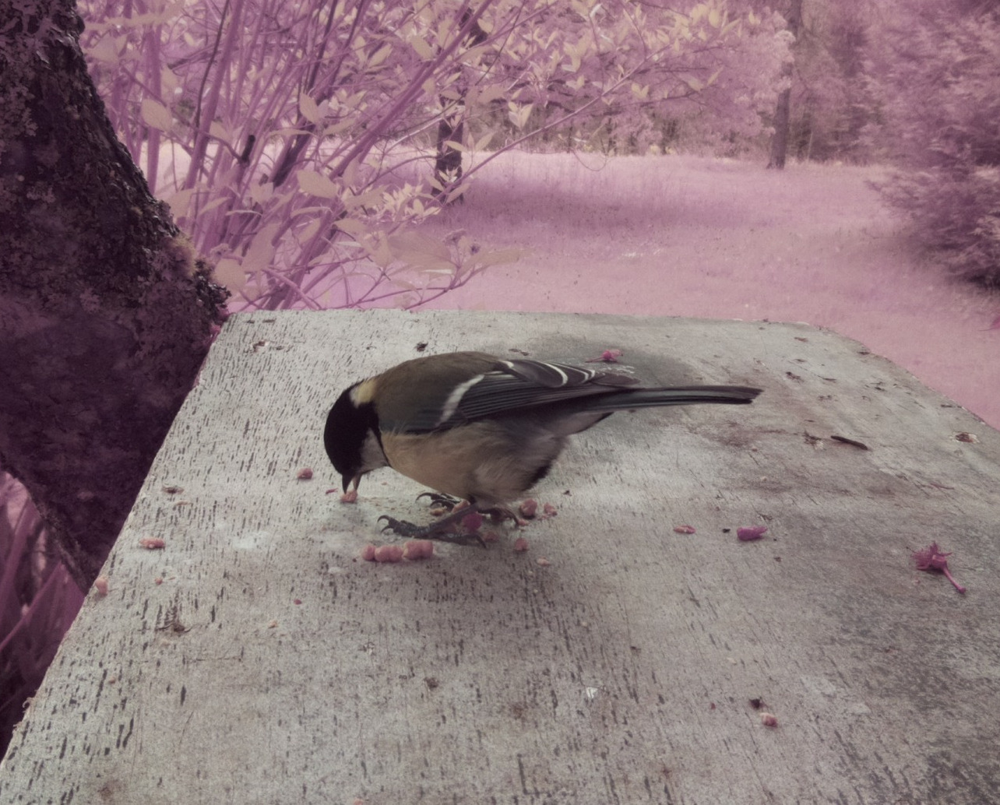
Data Science Project, rewarded as in the 'best 10 course projects' (out of 138 projects).